biogears-sbml-sepsis — figure gallery
27 figures across 10 studies. Use the list on the left to jump to any study; each figure has its own ↓ download.
The Simulation Core — a composable foundation for physiological modeling
00-simulation-core

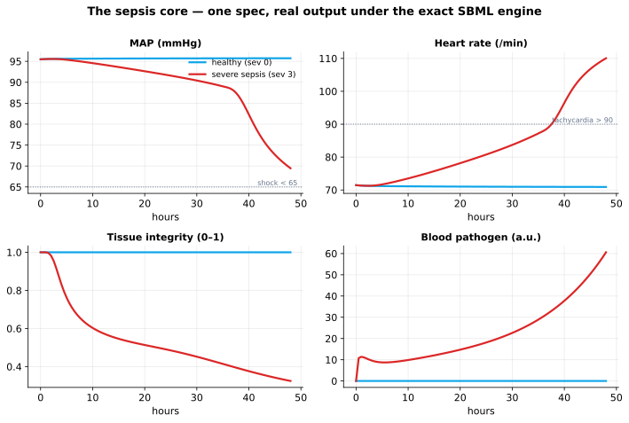
Model Interchangeability — one physiological specification, multiple implementations
01-composition

Simulation Ensembles — systematic perturbation and comparative physiology
02-ensembles

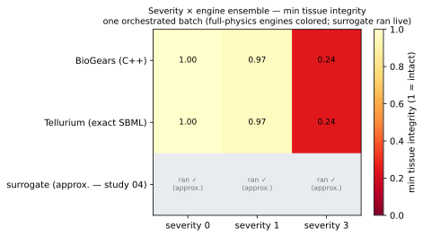

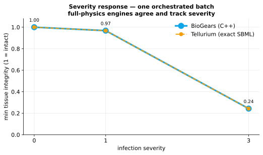
Model Orchestration — composable workflows across models, tools, and execution systems
03-workflows

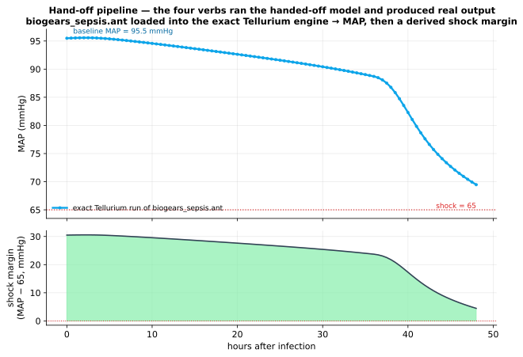
Scalable Simulation — performance, acceleration, and fidelity-aware execution
04-performance

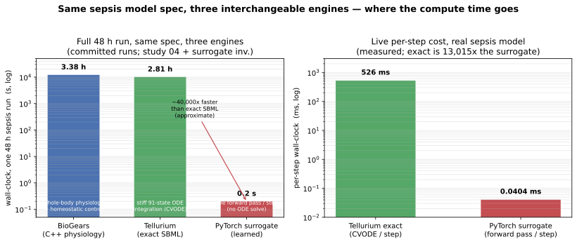

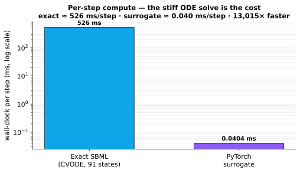

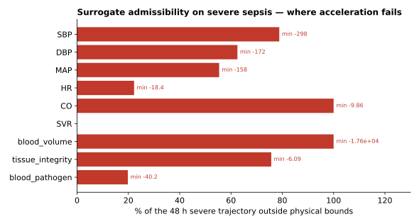

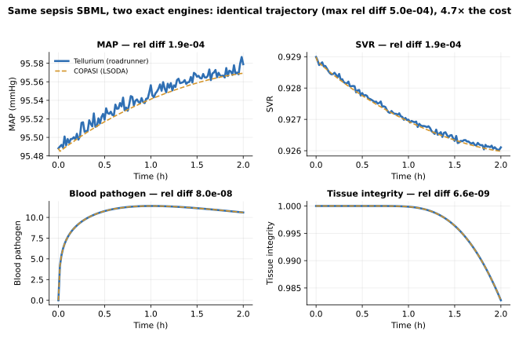

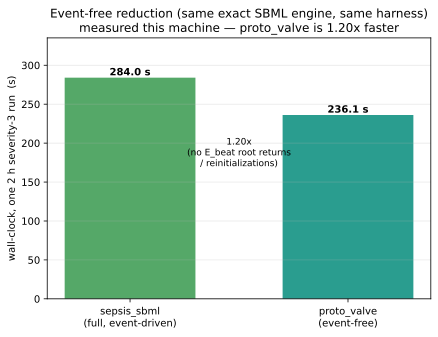
Mechanistic Fidelity — agreement, discrepancy, and missing physiology
05-fidelity

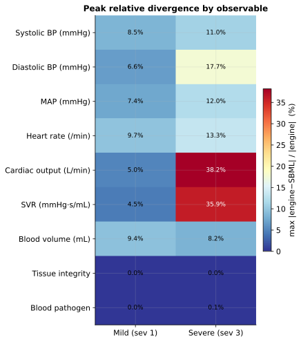


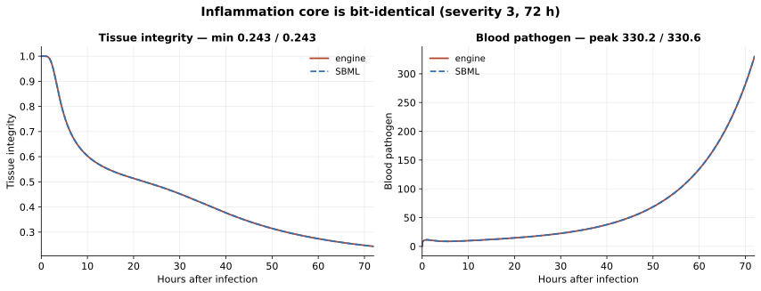

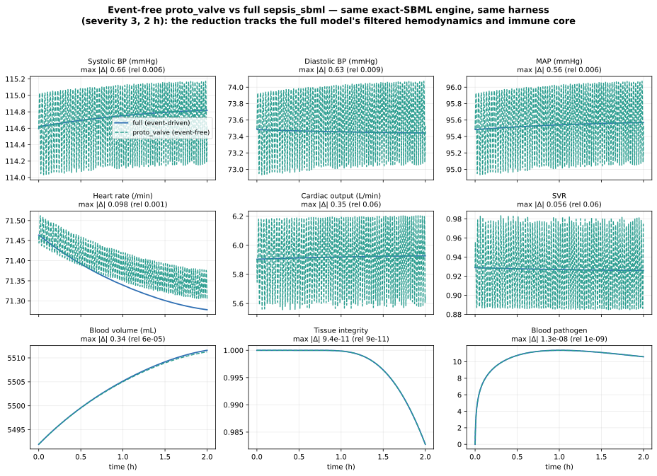
Dynamic Coupling — bidirectional co-simulation and physiological intervention
06-cosimulation

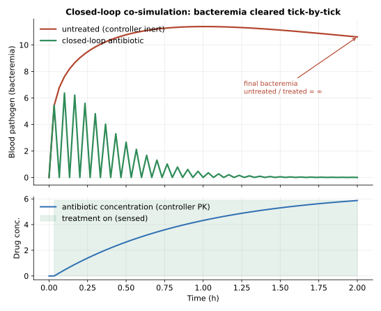

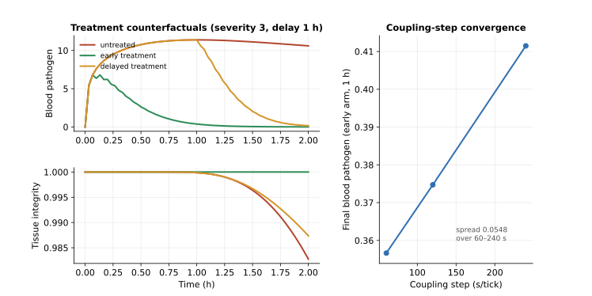
Scientific Evidence & Acceptance — from simulation runs to reproducible claims
07-evidence

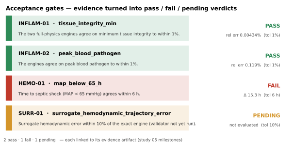
Model Reduction — event-driven vs event-free (speed vs fidelity)
08-reduced-model

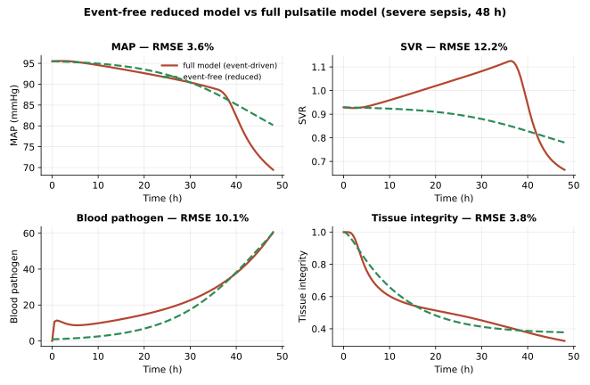

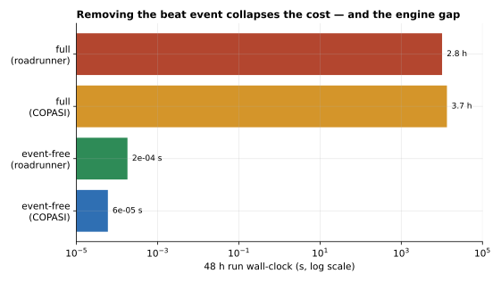
Event architecture — lifting the discrete sepsis events out of the model
09-event-architecture

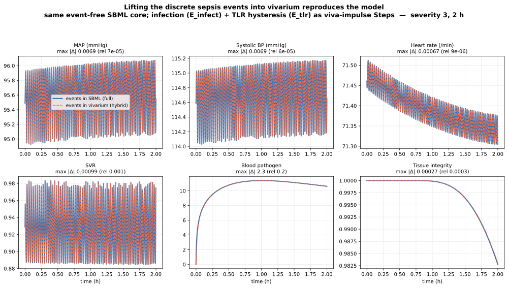

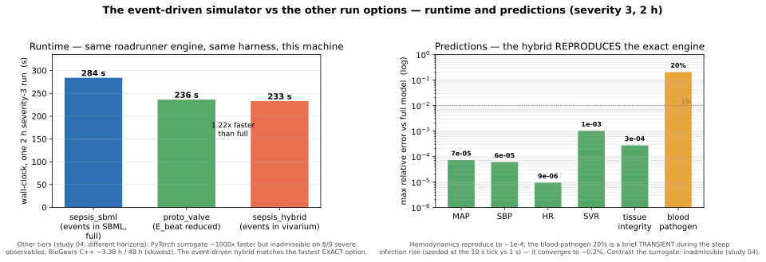